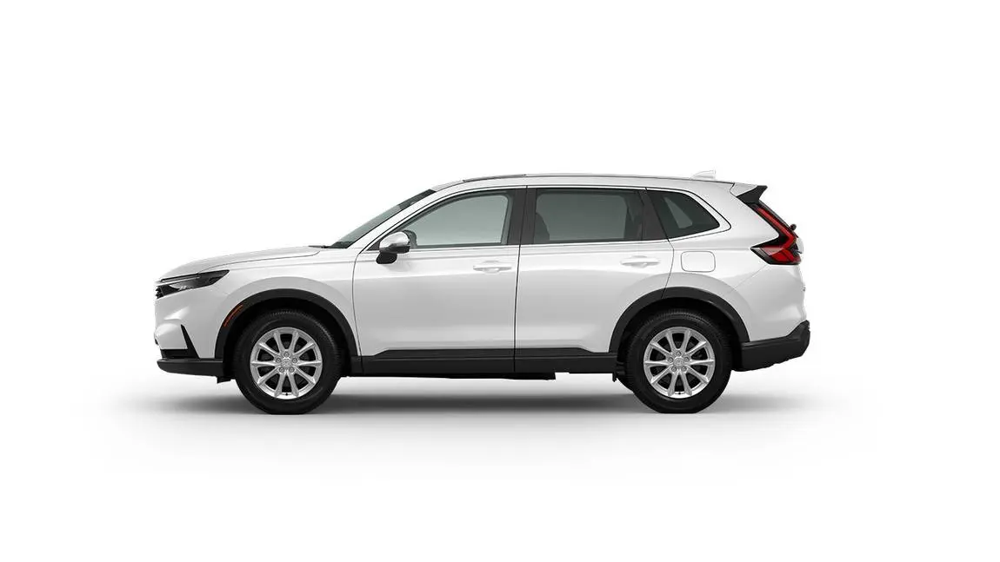
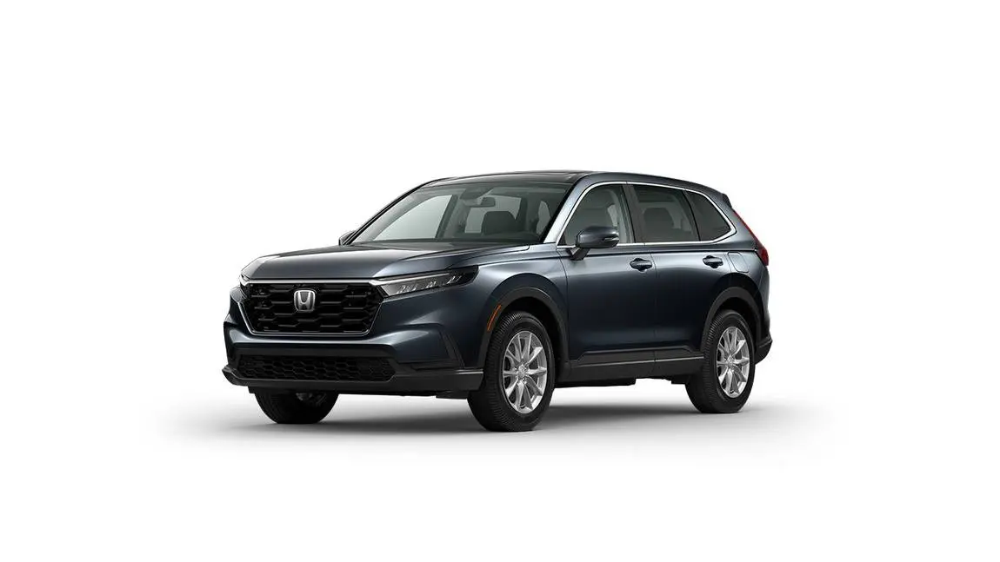
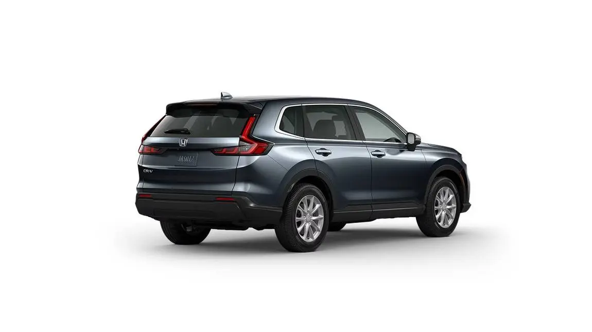
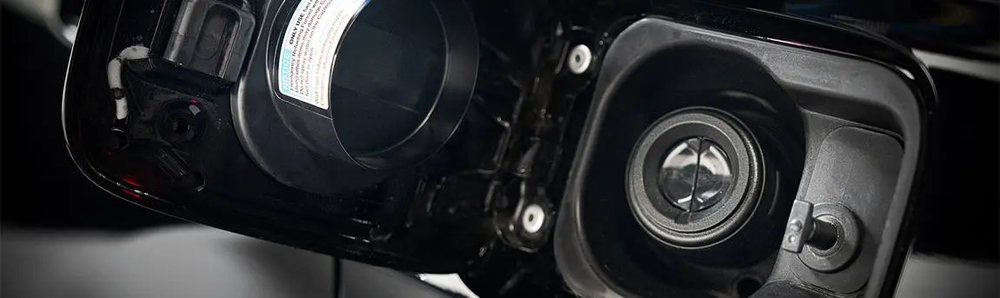
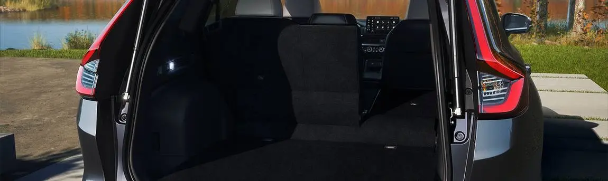
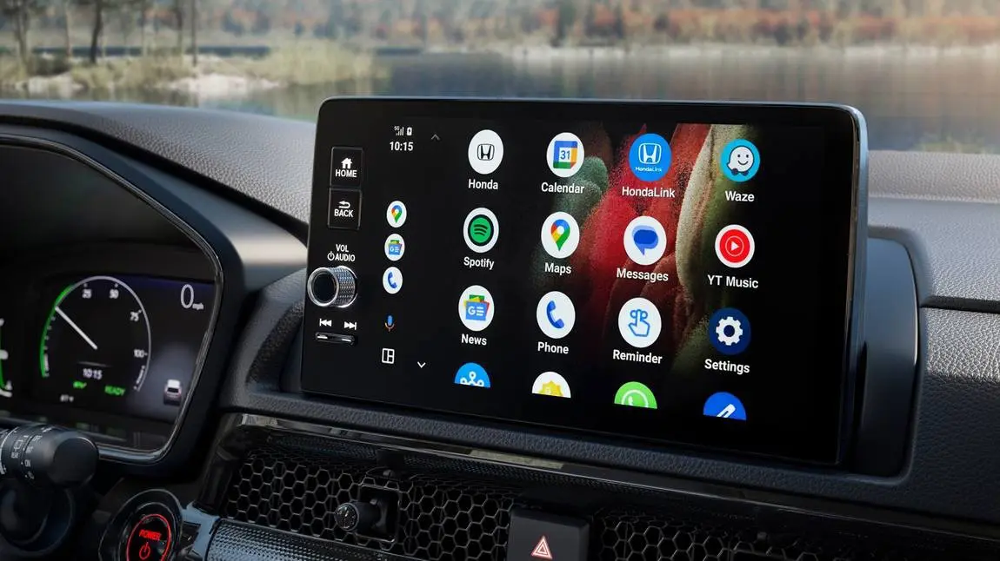
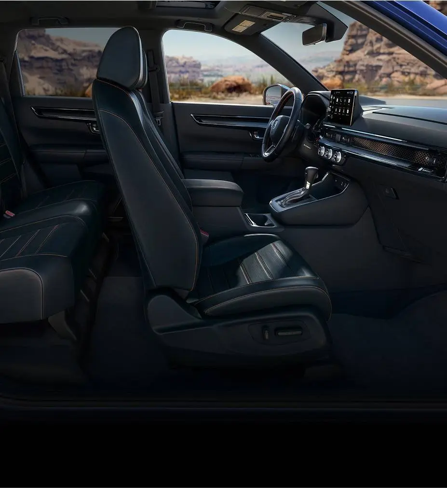
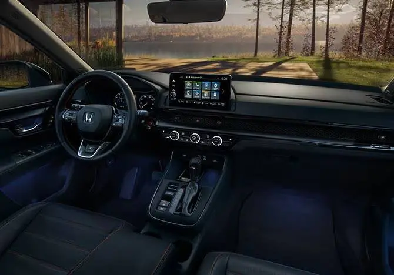
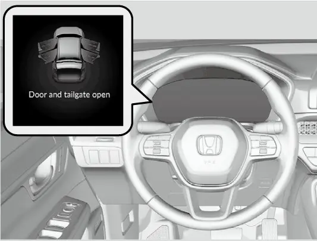

קאפיטל 1
איינפירונג
זייטן 10–22 אינעם PDF
אייער קאר: דער 2026 CR-V EX
דער בוך באהאנדלט נאר איין קאר: דעם 2026 Honda CR-V EX. ער וויל אייך העלפן קענען דעם קאר אזוי ווי א Honda טעכניקער קען אים, מיט יעדן קנעפל, יעדן סקרין, יעדע סערוויס-זאך און יעדע גרעניץ. Honda'ס מעלדונג ביים ארויסגעבן דעם 2026 מאדעל רופט דעם CR-V דעם מערסט-פארקויפטן SUV אין אמעריקע אין די לעצטע 25 יאר. ער איז אויך דער מערסט-פארקויפטער crossover אין אמעריקע זינט 1997, און ער איז געווען דער מערסט-פארקויפטער Honda קאר יעדעס יאר זינט 2017. דער CR-V איז א קאמפאקטער SUV, געבויט צו זיין פראקטיש, שפארעוודיג מיט בענזין און באקוועם. דער EX איז א גוט-אויסגעשטאטעטע ווערסיע דערפון.
וועלכע קאר איז דאס
Honda בויט זיבן 2026 CR-V trims (ווערסיעס), און דער אונער'ס מאנואל באשרייבט עטליכע פון זיי אויף איינמאל. לויט Honda'ס מעלדונג זענען דריי trims מיט א טורבא: LX, EX און EX-L. פיר זענען היברידן: Sport Hybrid, TrailSport Hybrid, Sport-L Hybrid און Sport Touring Hybrid. די היבריד מאדעלן שטייען אויבן אין דער ליסטע, און זיי מאכן אויס מער ווי 50% פון די CR-V פארקויפן. אייער קאר איז דער EX. ער האט דעם בענזין 1.5 ליטער טורבא מאטאר מיט CVT (continuously variable transmission, א טראנסמיסיע אן פעסטע גאנגען). יעדע אנווייזונג אין דעם בוך איז געשריבן פאר יענעם קאר.
2026 CR-V ווערסיעס
| Trim | מאטאר און טראנסמיסיע | מיטער דיספליי |
|---|---|---|
| LX | 1.5 ליטער טורבא, CVT | 7-אינטש (A-type) |
| EX (אייער קאר) | 1.5 ליטער טורבא, CVT | 7-אינטש (A-type) |
| EX-L | 1.5 ליטער טורבא, CVT | 10.2-אינטש (B-type) |
| Sport Hybrid | 2.0 ליטער היבריד מיט צוויי מאטארן | 7-אינטש |
| TrailSport Hybrid | 2.0 ליטער היבריד מיט צוויי מאטארן | 10.2-אינטש |
| Sport-L Hybrid | 2.0 ליטער היבריד מיט צוויי מאטארן | 10.2-אינטש |
| Sport Touring Hybrid | 2.0 ליטער היבריד מיט צוויי מאטארן | 10.2-אינטש |
וואס דער EX לייגט צו, און וואס ער האט נישט
אין פארגלייך מיט דעם LX אונטער אים, לייגט דער EX צו אסאך. Honda'ס feature guide (באשרייבונג פון די פיטשערס) רעכנט אויס 18-אינטש זילבער-געפארבטע alloy רעדער אנשטאט 17-אינטש שטאל רעדער מיט דעקלעך. ער לייגט אויך צו Blind Spot Information (ווארענונג פון קארס אין דעם בלינדן ווינקל) מיט Cross Traffci Monitor (ווארענונג פון קארס פון די זייטן), דעם עלעקטרישן מונרוף וואס עפנט זיך מיט איין דריק און קען זיך אויפהייבן, און dual-zone אויטאמאטישע קליימעט קאנטראל (באזונדערע טעמפעראטור פאר דרייווער און פאסאזשיר(. דערצו קומט נאך Smart Entry מיט Walk Away Auto Lock)דער קאר לאקט זיך אליין ווען איר גייט אוועק(, remote engine start)אנצינדן דעם מאטאר פון ווייטנס) מיט קליימעט קאנטראל, געהייצטע פארנטיגע זיצן, א 10-וועג עלעקטרישער דרייווער זיץ מיט 2-וועג עלעקטרישע lumbar (רוקן-שטיצע), געהייצטע עלעקטרישע שפיגלען, באלויכטענע שפיגעלעך אין די זון-דעקלעך, צוויי הינטערשטע USB-C טשארדזש פארטס, און א 240-וואט אודיא סיסטעם מיט 6 ספיקערס.
אין פארגלייך מיט דעם EX-L אויבן אים, האלט דער EX דעם 7-אינטש מיטער אנשטאט דעם 10.2-אינטש דיגיטאלן קלאסטער. ער האט אויך שטאף-זיצן אנשטאט לעדער, און א מאנועלן טעילגעיט אנשטאט אן עלעקטרישן. דער EX האט נישט קיין פארקינג סענסארס, נישט קיין Low-Speed Braking Control (אויטאמאטיש ברעמזן ביי פאמעלעכער גיכקייט), נישט קיין זכרון פאר'ן דרייווער זיץ, און נישט קיין 4-וועג עלעקטרישן פאסאזשיר זיץ. אייער פארנטיגער פאסאזשיר זיץ איז א מאנועלער זיץ מיט הייך אדזשאסטמענט.
דער EX איז נישט קיין היבריד
דאס איז וויכטיג יעדעס מאל וואס איר לייענט דעם מאנואל אדער קוקט אנדערע ווידיאוס. די היבריד ווערסיעס האבן א 2.0 ליטער מאטאר מיט צוויי עלעקטרישע מאטארן. זיי האבן אויך שיפטן מיט קנעפלעך, deceleration selectors (קנעפלעך צו קאנטראלירן דאס פאמעלעך ווערן), א B range און א Sport מאדָע. אייער EX האט גארנישט דערפון. ער האט א געווענליכן שיפט-לעווער אין דער מיטל-קאנסאל, און דריי דרייוו מאדָעס: Normal, Econ און Snow. ווען איר טרעפט אנווייזונגען פאר היברידן, שפרינגט זיי איבער.

ווי אזוי צו ניצן דעם בוך און דעם מאנואל
מקורות
אלעס אין דעם בוך קומט פון אפיציעלע מקורות, קיין געסונגען:
- דער 2026 CR-V Owner's Manual (אונער'ס מאנואל), Honda'ס אנליין אויסגאבע פאר'ן בענזין CR-V.
- Honda'ס אפיציעלע 2026 טאבעלע פון ספעציפיקאציעס פון hondanews.com, די EX קאלום.
- דער Honda Information Center feature guide, וואס ערקלערט וואס יעדע פיטשער טוט און וועלכע ווערסיעס האבן עס.
- Honda'ס מעלדונג פון אויגוסט 2025 ביים ארויסגעבן דעם 2026 CR-V.
- Google'ס Android Auto הילף בלעטער, גענוצט פאר'ן טעלעפאן קאפיטל (קאפיטל 8).
לייענען דעם אונער'ס מאנואל אליין
דער בענזין מאנואל באהאנדלט דעם LX, EX און EX-L צוזאמען. ווען דער מאנואל צייכנט א זאך מיט א שטערנדל, מיינט עס אז די זאך איז נישט פאראן אין אלע מאדעלן. ער ניצט אויך די אויסדרוקן "Models with A-type meter" (מאדעלן מיט A-type מיטער) און "Models with B-type meter" (מאדעלן מיט B-type מיטער). דער A-type meter איז דער 7-אינטש TFT דיספליי, דאס איז דער וואס איז אין אייער קאר. דער B-type meter איז דעם EX-L'ס 10.2-אינטש קלאסטער. אויב א מקור זאגט נישט קלאר עפעס פאר'ן EX, זאגט דער בוך גלאט ארויס אז עס איז נישט באשטעטיגט.
זיכערהייט ווארט-סימנים
דער אונער'ס מאנואל הייבט זיך אן מיט "A Few Words About Safety" (עטליכע ווערטער וועגן זיכערהייט). זיינע זיכערהייט מעלדונגען הייבן זיך אן מיט א זיכערהייט-ווארענונג סימבאל און מיט איינס פון דריי ווארענונג-ווערטער. איר וועט זען די ווערטער אויף לעיבלס אין קאר און דורכאויס דעם בוך.
ווארענונג-ווערטער אין אונער'ס מאנואל
| ווארענונג-ווארט | באדייט אויב איר פאלגט נישט די אנווייזונגען |
|---|---|
| DANGER | איר וועט זיכער ווערן געהרגעט אדער שווער פארוואונדעט |
| WARNING | איר קענט ווערן געהרגעט אדער שווער פארוואונדעט |
| CAUTION | איר קענט ווערן פארוואונדעט |
זיכערהייט אינפארמאציע קומט אויך אין אנדערע פארמען. דאס נעמט אריין זיכערהייט לעיבלס אויפן קאר, זיכערהייט קעפלעך ווי "Important Safety Precautions" (וויכטיגע זיכערהייט פארזיכטיגקייטן), זיכערהייט טיילן ווי "Safe Driving" (זיכער דרייוון), און שריט-נאך-שריט אנווייזונגען ווי אזוי צו ניצן דעם קאר ריכטיג. דער מאנואל זאגט אויך אפן אז ער קען נישט ווארענען פון יעדע סכנה, דערפאר מוזט איר ניצן אייער אייגענעם גוטן שכל.
וויכטיגע אינפארמאציע וועגן קאנטראלירן דעם קאר
דער מאנואל ערקלערט א יסודות'דיגע זאך וועגן יעדן SUV. אייער CR-V שטייט העכער פון דער ערד ווי א קאר וואס איז געבויט נאר פאר געפלאסטערטע וועגן. Honda'ס ספעציפיקאציעס שרייבן 7.8 אינטשעס מיט פראנט-ראד דרייוו און 8.2 אינטשעס מיט אלע-רעדער דרייוו (אן לאסט). די עקסטרע הייך לאזט אייך פארן איבער באמפס, שטערונגען און שלעכטע וועגן, און עס גיט אייך א בעסערע זעאונג פאראויס, אזוי אז איר קענט זען פראבלעמען פריער.

די אנדערע זייט איז אז דער צענטער פון שווערקייט איז העכער. א העכערער קאר קען לייכטער זיך איבערקערן אדער זיך איבערקוליען ווען מען דרייט פלוצלינג. דער מאנואל צייכנט אן אז utility קארס (ווי SUVs) קערן זיך איבער א סך אפטער ווי אנדערע סארטן קארס. ער צייכנט אויך אן אז ביי אן איבערקערן איז א מענטש אן א סיט בעלט א סך מער אין סכנה צו שטארבן ווי איינער וואס איז אנגעשנאלט.
דיזיין און קאלירן
Honda'ס feature guide באשרייבט דעם CR-V אלס שטארק און עלעגאנט, געפורעמט צו גיין דורך דער לופט מיט ווייניג ווידערשטאנד. פארנט, דער גריל און דער אונטערשטער פראנט-טייל געבן דעם קאר א דרייסטן אויסזען. הינטער'ן גריל איז פאראן אן auto-shutter סיסטעם (אויטאמאטישע לאדָנס). זיי מאכן זיך צו כדי די לופט זאל בעסער פליסן, און עפענען זיך אויטאמאטיש ווען די סיסטעמען אונטער דער האוד דארפן מער לופט צו קילן. LED דעי-טיים לייטס און LED העדלייטס זענען סטאנדארט.

הינטן האלט דער CR-V זיינע באקאנטע שטייענדיגע הינטערשטע לייטס מיט LED ליכט. דער אויבערשטער טייל פונעם קערפער האט גלאטע ליניעס פאר שפארעוודיגקייט, און דער אונטערשטער טייל זעט אויס שטארק. Honda ווייזט אויך אן אויף א פראקטישע פרט: די שפיגלען אויף די טירן: בעסערע זעאונג. די זייט-שפיגלען זענען אנגעמאכט אויף די טירן אנשטאט אויף די שויב-זיילן, און דער אונטערשטער טייל פון יעדע זייל איז ריין פון שטערונגען. דאס גיט אייך א קלארערע זעאונג פאראויס און צו די זייטן, וואס העלפט ביי פולע אינטערסעקשאנס. דער פולער ארומגאנג ארום דעם קאר איז אין קאפיטל 2.

איר קענט דארפן אייער פארב-נאמען און קאוד פאר צו פארריכטן קליינע קראצן אדער פאר ארבעט אין א באדי-שאפ. Honda'ס טאבעלע פון ספעציפיקאציעס רעכנט אויס זעקס קאלירן פאר'ן EX. אינעווייניג איז שטאף אין שווארץ אדער גרוי, און וועלכע אינעווייניגע קאליר מען קען באקומען הענגט אפ אין דער דרויסנדיגער קאליר.
EX דרויסנדיגע קאלירן און אינעווייניג
| דרויסנדיגע קאליר | פארב קאוד | אינעווייניג |
|---|---|---|
| Solar Silver Metallic | NH-932M | שווארץ |
| Crystal Black Pearl | NH-731P | שווארץ, גרוי |
| Meteorite Gray Metallic | NH-904M | שווארץ, גרוי |
| Platinum White Pearl | NH-883P | שווארץ, גרוי |
| Urban Gray Pearl | NH-912P | שווארץ |
| Radiant Red Metallic | R-569M | גרוי |
מאטאר, טראנסמיסיע און בענזין
לויט Honda'ס ספעציפיקאציעס ניצט דער EX א טורבא מאטאר מיט 4 צילינדערס אין איין ריי, מיט direct fuel injection (בענזין גלייך אריינגעשפריצט אין צילינדער). ער האט אן intercooler (קילער פאר דער טורבא לופט(און א drive-by-wire throttle)עלעקטרישער גאז-פעדאל(. זיין ברייטער torque band)די קראפט קומט שוין ביי נידעריגע דרייען) איז די סיבה פארוואס דער קאר ציט גוט אין שטאט טראפיק אן דארפן הויכע דרייען. DOHC מיינט double overhead camshafts (צוויי קעמשאפטן אויבן). קאפיטל 3 ערקלערט ווי אזוי דאס אלעס ארבעט.
EX מאטאר ספעציפיקאציעס
| זאך | ווערט |
|---|---|
| גרייס | 1.5(1,498 cc ליטער) |
| כח (horsepower) | 6,000 rpm (SAE net) @ 190 |
| torque (דריי-קראפט) | 179 lb-ft @ 1,700-5,000 rpm |
| רויטע ליניע (מאקסימום דרייען) | 6,600 rpm |
| וואלוון | 16-valve DOHC VTEC |
| bore x stroke (צילינדער ברייט x לענג) | 73 x 89.5 mm |
| compression ratio | 10.6 |
די קראפט גייט דורך דעם CVT. CVT: קיין פעסטע גאנגען, גלאטע איבערגאנג. אנשטאט גאנגען טוישט ער זיין ratio (פארהעלטעניש) גלאט צווישן 2.645 ביז 0.405, אזוי אז דער מאטאר קען בלייבן ביי א שפארעוודיגער גיכקייט. דער ריווערס ratio איז 2.645 ביז 1.800, און דער fni al drive ratio איז 5.640.
פראנט-ראד דרייוו איז סטאנדארט. Real Time AWD with Intelligent Control System (אלע-רעדער דרייוו) קען מען באקומען אויפן EX. פאר 2026 באקומען די אלע-רעדער מאדעלן א פארבעסערטע traction (אנכאפן דעם וועג) קאנטראל אונטער 9 mph. ווען דער סיסטעם באמערקט א חילוק אין דער דריי-גיכקייט צווישן צוויי רעדער, איינס אויף יעדער אקס, פארגרעסערט ער שטארק סיי די קראפט וואס גייט צו די צוויי רייפן מיט דעם בעסטן אנכאפן, און סיי די ברעמז-קראפט אויף די רעדער וואס גליטשן זיך.
Idle-Stop לעשט אויס דעם מאטאר ביים שטיין, כדי צו שפארן בענזין. דער EX האט אויך דעם Eco Assist סיסטעם, Hill Start Assist (הילף ביים אנהייבן פארן אויף א בארג), Hill Descent Control (קאנטראל ביים אראפפארן פון א בארג(, און אן עלעקטרישן פארקינג ברעמז מיט אויטאמאטישן brake hold)האלטן דעם ברעמז). קאפיטל 14 באהאנדלט די דריי דרייוו מאדָעס.
בענזין איז פשוט. Honda שרייבט פאר regular unleaded בענזין, און דער טאנק האלט 14 U.S. gallons. דער קאר האט א בענזין-טירל וואס עפנט זיך מיט א דריק, און א capless fli ler (אריינגיס אן א דעקל), אזוי אז עס איז נישטא קיין גאז-דעקל צו פארגעסן. די עמיסיע רעיטינג איז LEV4 SULEV30. Honda רעכנט נישט אויס קיין געפלאנטע tune-ups פאר בערך 100,000 מייל. קאפיטל 4 באהאנדלט בענזין און בענזין-שפארן גרינטליך.

EPA בענזין-שפארן (mpg)
| דרייוו | שטאט | הייוועי | צוזאמען |
|---|---|---|---|
| פראנט-ראד דרייוו | 28 | 33 | 30 |
| אלע-רעדער דרייוו | 27 | 31 | 29 |
שאסי, מאסן און פלאץ
אונטן האט דער EX א MacPherson strut פארנטיגע סוספענשאן און א multi-link הינטערשטע סוספענשאן, מיט stabilizer bars (סטאביליזאטאר שטאנגען) אויף ביידע עקן. די שטאנגען מעסטן 26.6 mm פארנט און 17.2 mm הינטן ביי פראנט-ראד קארס, און 26.0 mm און 12.5 mm ביי אלע-רעדער קארס. דער קאר האט אויך א פיטשער וואס Honda רופט Agile Handling Assist (הילף פאר גלאטע קאנטראל אין קורוון). די סטירינג איז dual-pinion עלעקטרישע power steering. עס נעמט נאר 2.4 דרייען פון איין עק ביז דעם אנדערן, מיט א ratio פון 12.4 (פראנט-ראד דרייוו) אדער 12.3 (אלע-רעדער דרייוו), און דער דריי-דורכמעסער איז 37.3 פיס פון קערב צו קערב.
די ברעמזן זענען 12.3-אינטש ventilated (מיט לופט-לעכער) דיסקס פארנט, און 12.2-אינטש פולע דיסקס הינטן. די all-season טייערס זענען 235/60R18 103H. דער קליינער ספעיר טייער איז א T155/90D17 112M. טייערס און דרוק ווערן באהאנדלט אין קאפיטל 16.
די דרויסנדיגע מאסן אונטן זענען נוצליך פאר גאראזשן, פארקינג פלעצער און קאר וואשעס. דער wheelbase איז דער אפשטאנד צווישן דער פארנטיגער און הינטערשטער אקס. די approach און departure ווינקלען זאגן אייך ווי שטאציג א ראמפע איר קענט אנטרעפן אן קראצן א באמפער.
דרויסנדיגע מאסן
| זאך | פראנט-ראד דרייוו | אלע-רעדער דרייוו |
|---|---|---|
| לענג | 184.8 in | 184.8 in |
| ברייט | 73.5 in | 73.5 in |
| הייך | 66.2 in | 66.5 in |
| wheelbase (אפשטאנד צווישן די אקסן) | 106.3 in | 106.3 in |
| track (פארנט/ הינטן) | 63.4 / 64.1 in | 63.3 / 63.9 in |
| הייך פון דער ערד | 7.8 in | 8.2 in |
| approach / departure (ווינקל פארנט / הינטן) | 17.1 / 21.3 deg | 17.7 / 22.1 deg |
אינעווייניג האט דער EX 38.2 אינטשעס פלאץ איבער'ן קאפ אין ביידע רייען. פלאץ פאר די פיס איז 41.3 אינטשעס פארנט און 41 אינטשעס הינטן. פלאץ ביי די אקסלען איז 57.9 און 55.9 אינטשעס, און ביי די היפס 55.6 און 52.6 אינטשעס. פאסאזשיר פלאץ איז 103.5 cubic feet. לאסט-פלאץ איז א שטארקע זייט: 39.3 cubic feet הינטער'ן הינטערשטן זיץ, און 76.5 cubic feet ווען דער 60/40 צעטיילטער הינטערשטער רוקן איז צוגעלייגט. קאפיטל 22 ווייזט ווי אזוי צו ניצן דאס אלעס.

די וואג פונעם ליידיגן קאר איז 3,497 פונט מיט פראנט-ראד דרייוו, און 3,616 פונט מיט אלע-רעדער דרייוו. די וואג איז צעטיילט 59 פראצענט פארנט און 41 פראצענט הינטן מיט פראנט-ראד דרייוו, און 58 און 42 מיט אלע-רעדער דרייוו. Honda'ס טאבעלע פון ספעציפיקאציעס שרייבט א שלעפ-קאפאציטעט פון 1,500 פונט פאר'ן EX.

זיכערהייט און באקוועמליכקייט
Honda Sensing אויפן EX נעמט אריין די פאלגנדע סיסטעמען:
- Collision Mitigation Braking System (CMBS), אויטאמאטיש ברעמזן כדי צו פארמיידן אדער פארקלענערן א קראך.
- Forward Collision Warning (FCW), ווארענונג פון א קראך פאראויס.
- Road Departure Mitigation (RDM), הילף ווען דער קאר גייט ארויס פונעם וועג.
- Lane Departure Warning (LDW), ווארנט ווען דער קאר גייט ארויס פון ליין.
- Adaptive Cruise Control with Low-Speed Follow, קרוז וואס האלט אפשטאנד, אויך ביי פאמעלעכער גיכקייט.
- Lane Keeping Assist System (LKAS), הילף צו בלייבן אין ליין.
- Traffci Jam Assist, הילף אין טראפיק.
- Traffci Sign Recognition, דערקענט וועג-שילדן.
- Auto high-beam העדלייטס, אויטאמאטישע הויכע ליכט.
- Driver attention monitor, היט אפ צי דער דרייווער איז אויפמערקזאם.
- Blind Spot Information און Cross Traffic Monitor (נישט אויפן LX).
Honda'ס מעלדונג רעכנט 10 עירבעגס סטאנדארט, אריינגערעכנט פארנטיגע קני-עירבעגס און עירבעגס אין די הינטערשטע זייט-זיצן. זיי זיצן אין דעם ACE (Advanced Compatibility Engineering) קערפער-געבוי. דער EX האט אויך VSA (סטאביליטעט קאנטראל) מיט traction control, ABS, Post Collision Braking (ברעמזן נאך א קראך(, TPMS)רייף-דרוק מאניטאר), א הינטערשטע קאמערע מיט dynamic ליניעס, א Rear Seat Reminder (דערמאנונג צו קוקן אויפן הינטערשטן זיץ), און סיט בעלט דערמאנונגען פאר יעדן זיץ. קאפיטלען 9, 10 און 17 באהאנדלען די סיסטעמען באריכות.

פאר טעגליכע באקוועמליכקייט האט דער EX א 9-אינטש טאטש-סקרין מיט wireless (אן קאבל) Apple CarPlay און Android Auto, און א 15-וואט Qi wireless טשארדזשינג פלאץ. אלע דריי זענען געמאכט געווארן סטאנדארט אויף יעדע ווערסיע פאר 2026. פארנט: 1 USB-C דאטא, 1 USB-C טשארדזש, און דער הינטערשטער זיץ באקומט צוויי USB-C טשארדזש פארטס, אלע מיט 3.0 amps. איר באקומט אויך דאס פאלגנדע:
- dual-zone אויטאמאטישע קליימעט קאנטראל מיט א פייכטקייט סענסאר.
- געהייצטע פארנטיגע זיצן.
- א 10-וועג עלעקטרישער דרייווער זיץ מיט עלעקטרישע lumbar (רוקן-שטיצע).
- א מונרוף וואס עפנט זיך מיט איין דריק.
- Active Noise Cancellation (פארמינערט ראש אינעווייניג).
- אנצינדן מיט א קנעפל.
- Smart Entry מיט Walk Away Auto Lock.
- remote engine start פונעם שליסל-פאב.

Honda Service Pass
Honda'ס feature guide זאגט אז אלע וואס קויפן א 2026 CR-V באקומען Honda Service Pass (פריי סערוויס(. עס דעקט די ערשטע סערוויס וואס די פאבריק פלאנט, מיט Honda Genuine Parts)ארגינעלע Honda טיילן), פאר'ן ערשטן יאר אדער 12,000 מייל פון דעם טאג פונעם קויפן, וואס עס קומט פריער. ביים CR-V נעמט עס אריין א געווענליכע טוישונג פון אויל און אויל-פילטער, א tire rotation (אריבערטוישן די רייפן(און א multi-point inspection)א קאנטראל פון אסאך טיילן). דער Maintenance Minder (סערוויס-דערמאנער) לאזט אייך וויסן אין קאר ווען סערוויס קומט, און איר קענט אפמאכן סערוויס דורך דעם HondaLink עפ ּאויפן טעלעפאן. קאפיטל 19 ערקלערט דאס אינגאנצן.
מאפע פון דעם בוך
מאפע פון די קאפיטלען
| קאפיטלען | פאקוס | טעמעס |
|---|---|---|
| 2 -10 | דער קאר אליין | דרויסן, מאטאר, בענזין, אינעווייניג, דרייווער'ס פלאץ, טאטש-סקרין, Pixel 9a, Honda Sensing, בלייבן אין ליין און שלעכטע זעאונג |
| 11- 19 | טעגליך ניצן און אפהיטן | לייטס, קליימעט, זיצן, דרייוו מאדָעס, פארקן, טייערס, ברעמזן, נויט-פאלן, סערוויס |
| 20- 30 | ענדיגן דעם קורס | באטעריע, שליסל און זיכערהייט, לאסט-פלאץ, סאפטוועיר, סעזאנען און ביינאכט, הייוועי און שטאט, באהאלטענע פיטשערס, פראבלעמען, קנעפל-רשימה, באזיצן דעם קאר, גרויסער איבערבליק און מקורות |
מסתמא וועט איר צומערסט צוריקקומען צו קאפיטלען 11 ביז 19, למשל פאר'ן ווינטער אדער ווען א ווארענונג-ליכטל צינדט זיך אן.
אייער מנהג פאר יעדע פארט
די Safety Checklist (זיכערהייט רשימה) אין מאנואל רעכנט אויס זאכן צו טשעקן יעדעס מאל פאר'ן דרייוון. פארשליסן די טירן העלפט פארמיידן אז א פאסאזשיר זאל ארויסגעווארפן ווערן ביי א קראך, און עס לאזט נישט אז איינער פון דרויסן זאל אומגעריכט עפענען א טיר אדער דעם טעילגעיט.
זיכערהייט רשימה פאר'ן דרייוון
- נאכדעם וואס אלע זענען אינעווייניג, מאכט זיכער אז אלע טירן און דער טעילגעיט זענען פארמאכט און פארשלאסן.
- אויב א מעלדונג אז א טיר אדער טעילגעיט איז אפן באווייזט זיך אויפן driver information interface (דרייווער אינפארמאציע דיספליי), מאכט צו די טיר אדער דעם טעילגעיט פעסט ביז די מעלדונג פארשווינדט.
- רוקט דעם דרייווער זיץ אזוי ווייט צוריק ווי איר קענט, בשעת איר קענט נאך קאנטראלירן דעם קאר; זיצן צו נאענט צו א פארנטיגן עירבעג קען ביי א קראך פאראורזאכן שווערע אדער טויטליכע וואונדן.
- שטעלט יעדע קאפ-שטיצע אזוי אז איר מיטן זאל זיין גלייך מיט'ן מיטן פון אייער קאפ; העכערע מענטשן זאלן ניצן די העכסטע פאזיציע.
- שנאלט זיך אן ריכטיג מיט'ן סיט בעלט, און מאכט זיכער אז יעדער פאסאזשיר איז אנגעשנאלט.
- שיצט קינדער מיט סיט בעלטס אדער קינדער-זיצן וואס פאסן פאר זייער עלטער, הייך און וואג.

אפטע פראגעס
פראגע: קען איך ניצן די היבריד טיילן פונעם מאנואל אדער ווידיאוס אנליין פאר מיין EX?
ענטפער: ניין. שיפטן מיט קנעפלעך, deceleration selectors, B range און Sport מאדָע זענען נאר ביי היברידן. אייער EX האט א שיפט-לעווער און דריי מאדָעס: Normal, Econ און Snow.
פראגע: וועלכע מיטער אנווייזונגען זענען פאר מיין קאר?
ענטפער: פאלגט אלעס וואס איז אנגעצייכנט "Models with A-type meter", דאס איז דער 7-אינטש דיספליי. B-type אנווייזונגען זענען פאר דעם EX-L'ס 10.2-אינטש קלאסטער.
פראגע: האט מיין EX פארקינג סענסארס אדער אן עלעקטרישן טעילגעיט?
ענטפער: ניין. ביידע זענען אויפן EX-L און העכערע ווערסיעס. דער EX האט א מאנועלן טעילגעיט.
פראגע: וועלכן בענזין זאל איך ניצן?
ענטפער: Regular unleaded. דער טאנק האלט 14 U.S. gallons, און דער אריינגיס איז capless (אן א דעקל).
פראגע: וואס דעקט Honda Service Pass?
ענטפער: עס דעקט די ערשטע סערוויס וואס די פאבריק פלאנט, אין משך פון 1 יאר אדער 12,000 מייל פונעם קויפן: א טוישונג פון אויל און פילטער, א tire rotation און א multi-point inspection.
הויפט פונקטן
- אייער קאר איז דער EX: א 1.5 ליטער טורבא מיט 190 hp, א CVT, און פראנט-ראד דרייוו אדער AWD וואס מען קען באקומען.
- שפרינגט איבער היבריד אנווייזונגען און אלעס וואס איז אנגעצייכנט "B-type meter"; אייער קאר האט דעם 7-אינטש A-type מעטער.
- ניצט regular unleaded בענזין; דער טאנק האלט 14 gallons, און EPA צוזאמען: FWD 30 mpg, AWD 29 mpg.
- מאקסימום שלעפן איז 1,500 פונט, וואס איז א גרעניץ, נישט קיין ציל.
- הייך פון דער ערד איז 7.8 אינטשעס (FWD) אדער 8.2 אינטשעס (AWD); מיידט אויס פלוצלינגע דרייען, ווייל דער צענטער פון שווערקייט איז העכער.
- דעם EX'ס פארב-נאמען און קאוד דארף מען פאר פארריכטן קראצן; Platinum White Pearl, למשל, איז NH-883P.
- פאר יעדע פארט, טשעקט אז די טירן זענען פארשלאסן, די זיצן און קאפ-שטיצעס זענען אויסגעשטעלט, און אלע זענען אנגעשנאלט.